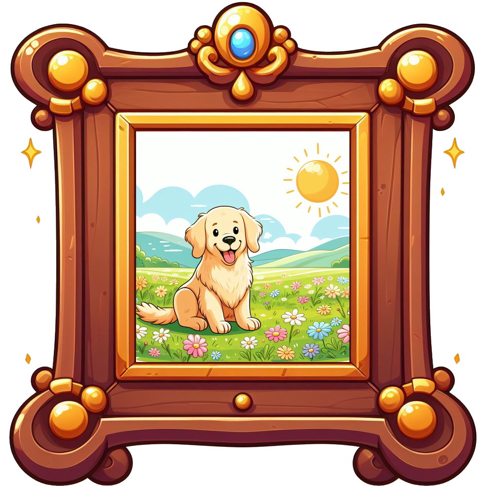
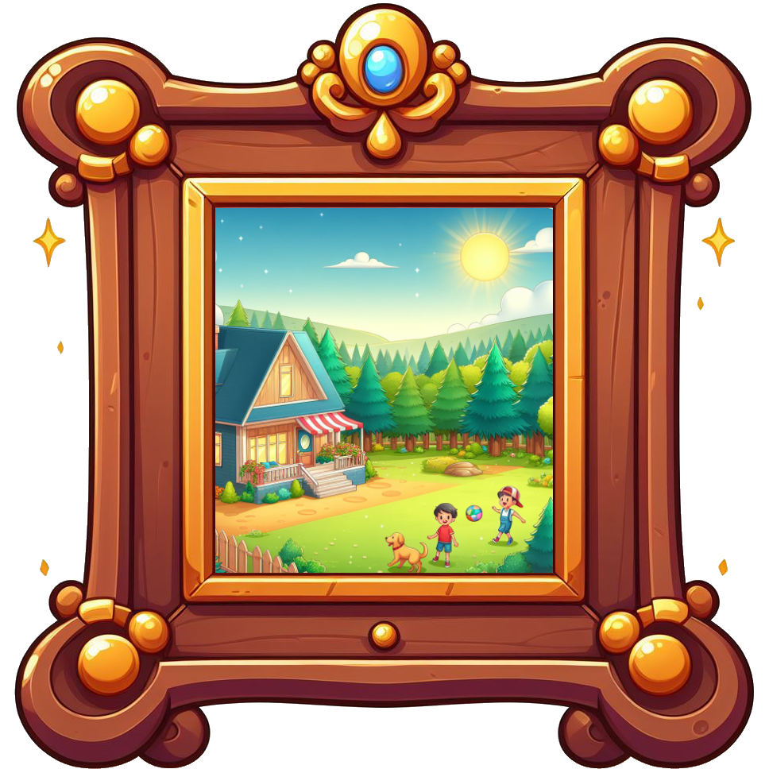
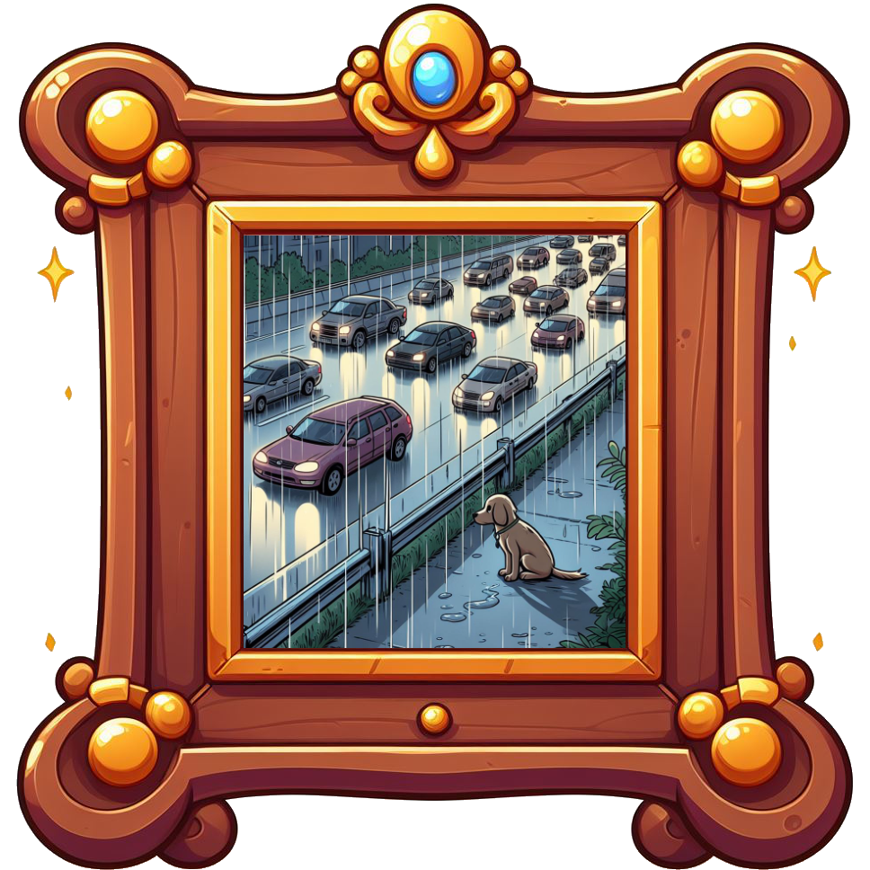
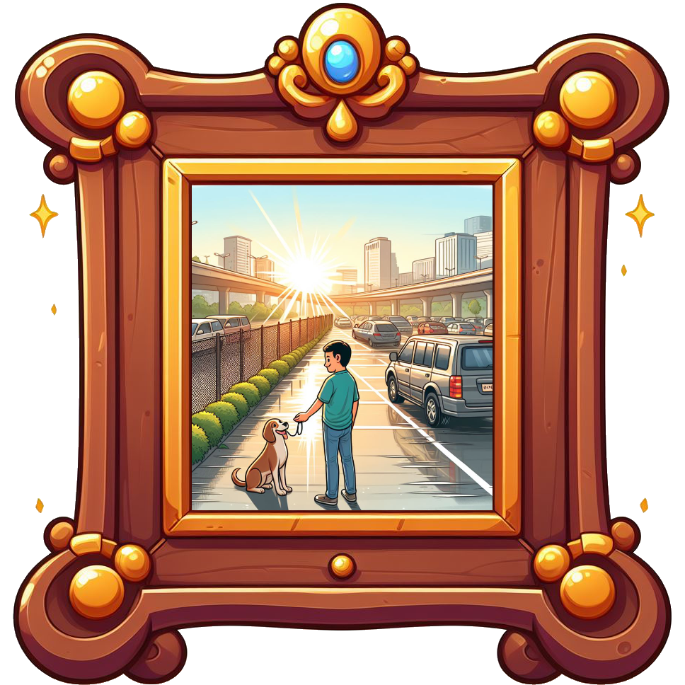

Treffen Sie Max, unseren liebenswerten vierbeinigen Freund im Tierheim! Max ist ein treuer
Begleiter, der durch eine schwierige Zeit gegangen ist.

Einst wohnte er bei einer liebevollen Familie mit zwei Söhnen.
Max war glücklich!
Das Haus stand am Waldrand und im Herbst war die große Wiese vor dem Haus bedeckt
mit gold-gelbem Laub.

Als die Söhne allerdings zu alt wurden, setzte die einst so liebevolle Familie Max an einer
Autoraststätte an der polnischen Grenze aus.
Von da an musste Max sein Leben auf der Straße im dunkeln fristen.

Ein Glück fanden ihn die lieben Helfer eines Tierheims, welche Max aufnahmen.
Jetzt träumt Max davon seinen Käfig verlassen zu können, mit anderen Hunden zu toben und wieder auf
der Straße leben zu dürfen.
Dein Herz wird schmelzen, wenn du Max näher kennenlernst.

Hilf Max bei seinem Traum und gib ihm ein besseres Leben!